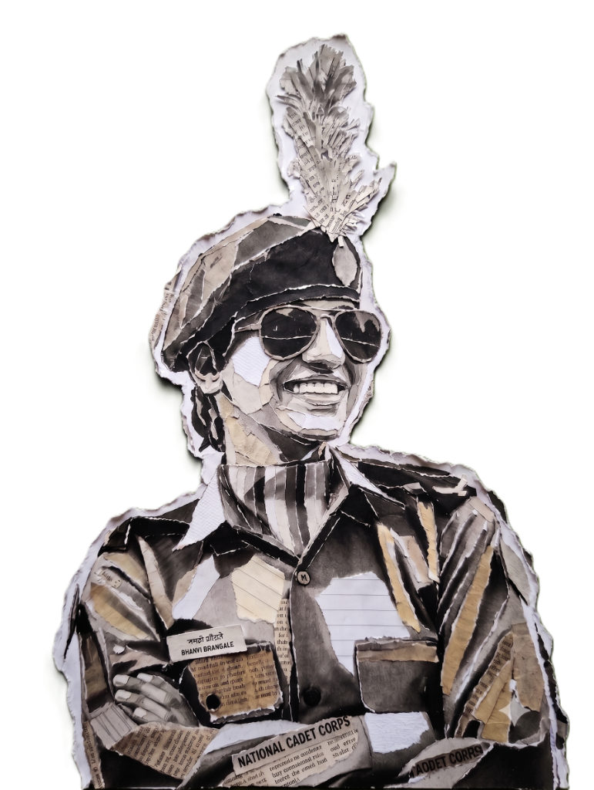
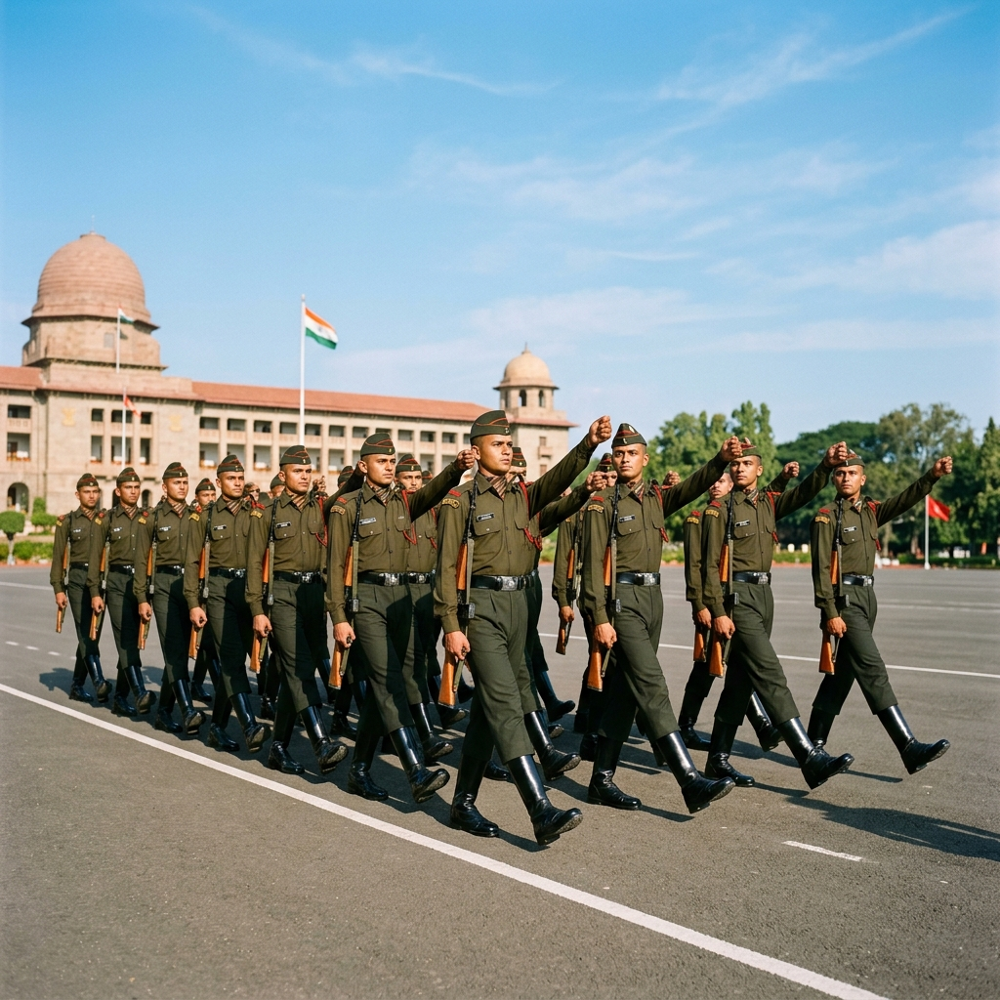
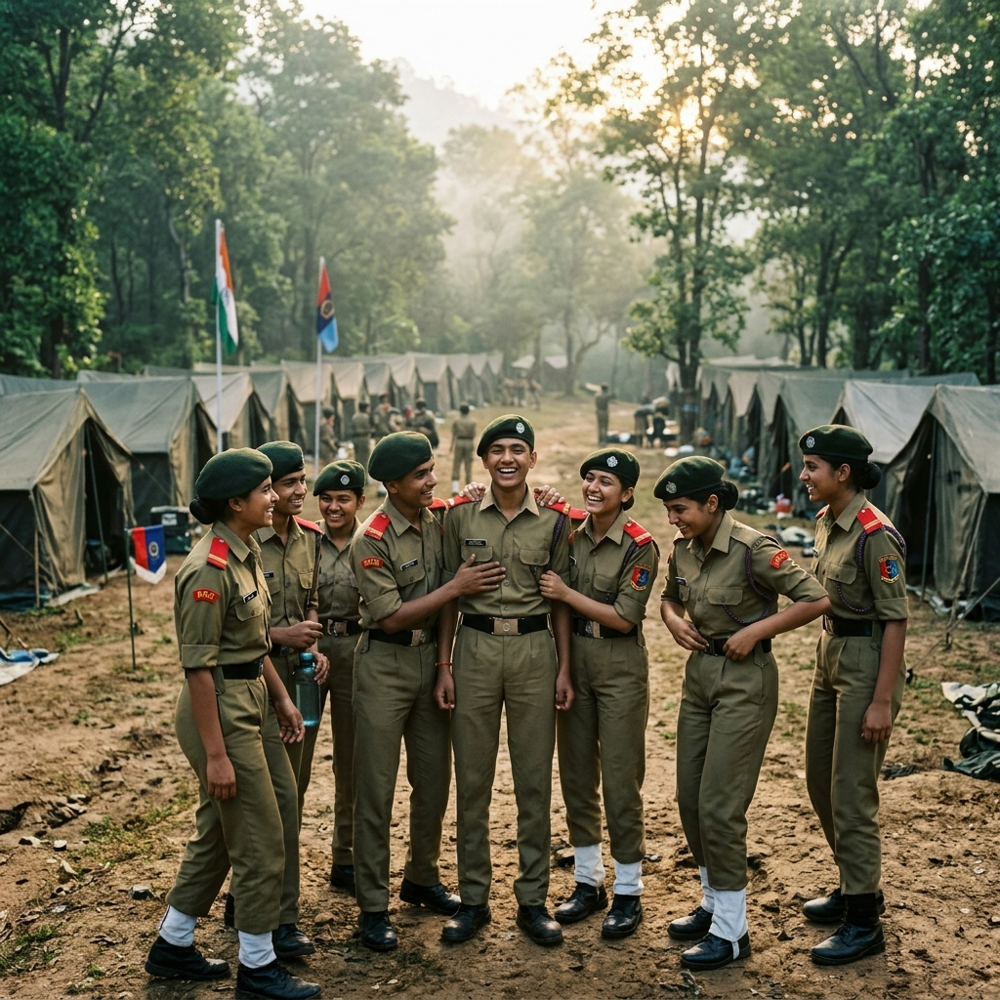
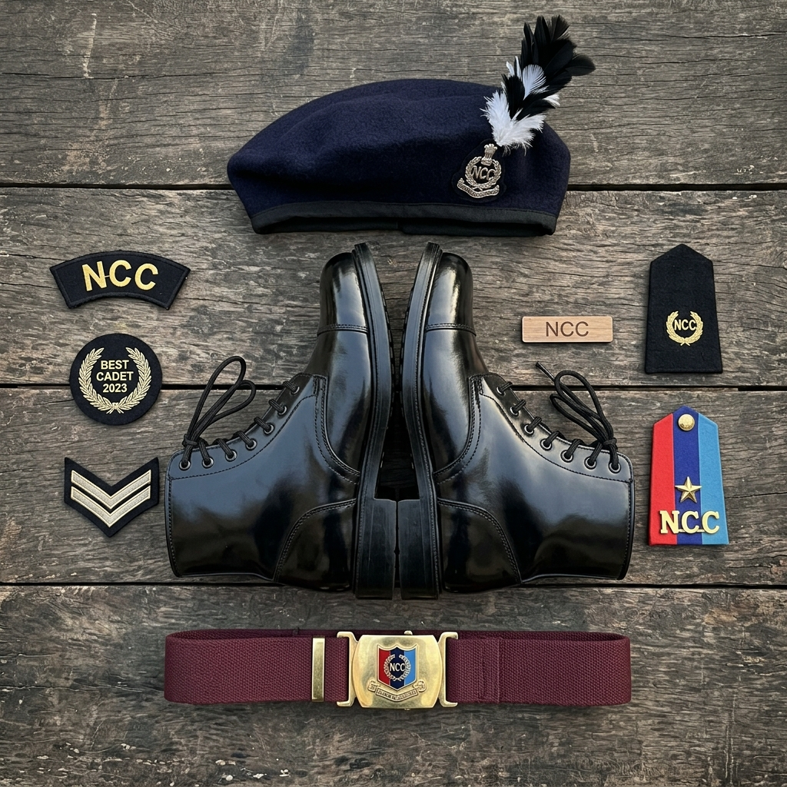
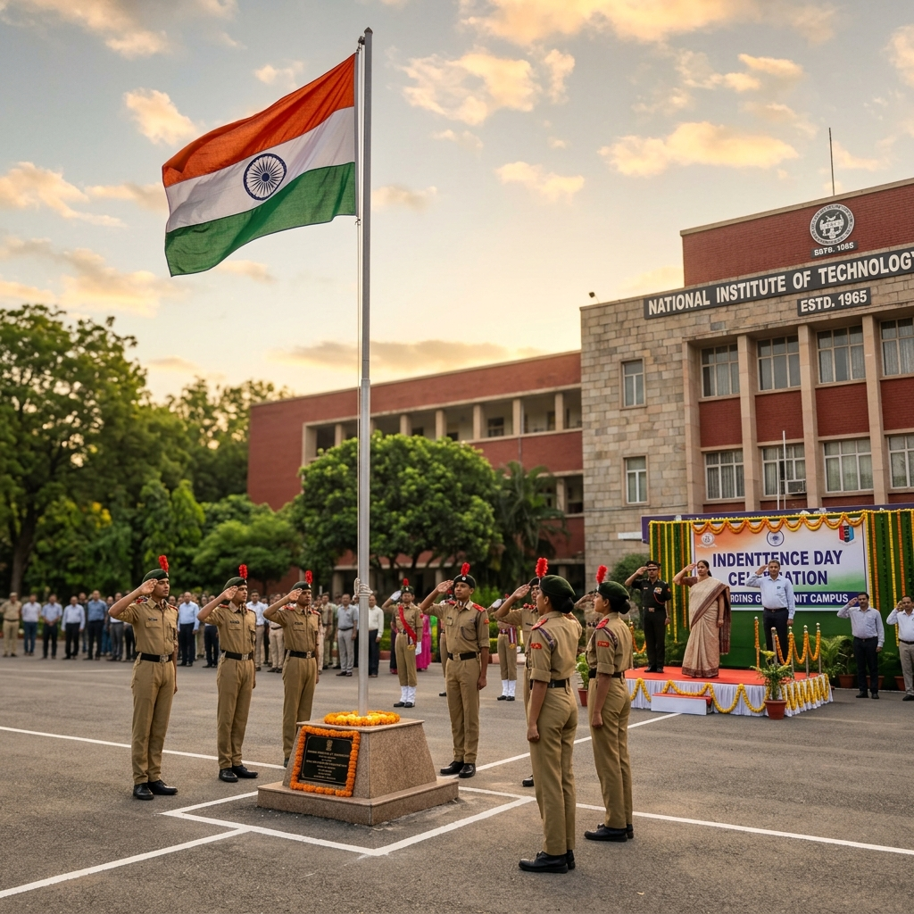

National Cadet Corps
"Discipline. Leadership. Service Before Self."
Joining NCC wasn't just about wearing a uniform—it was about learning discipline, resilience, teamwork, and responsibility. Every camp, parade, and challenge helped shape the person I am today.

Journey Flow
Joined NCC
Enlisted in the Air Wing, starting a discipline-driven journey.
Regular Parades
Weekly morning drill drills and standard assembly exercises.
Training Camps
Attended intense training bootcamps to foster survival and focus.
Drill Practice
Rigorous weapon drills, marching, and command synchronization.
Leadership
Managing cadet squads, coordinating events, and guiding recruits.
Current Journey
Upholding NCC values daily, building IT systems with high discipline.
Aesthetic NCC Gallery




Skills Gained
Leadership
Leading squads, guiding peers, and taking charge during events.
Discipline
Punctuality, consistency, and standard compliance in tasks.
Teamwork
Collaborating in groups to complete camp drills and projects.
Time Management
Fulfilling morning assemblies and strict training schedules.
Physical Fitness
Stamina, regular exercises, running drills, and camp training.
Confidence
Polishing public communication and commanding cadet squads.
Responsibility
Ensuring inventory management and security during camp events.
Patriotism
Fostering deep dedication to national values and community service.
Achievements & Highlights
National Certificates
Completed standard certifications, validating theoretical and practical skills in drill, weapon training, and field craft.
Camps Attended
Completed Combined Annual Training Camp (CATC), exploring obstacle course runs and cross-country drills.
Special Awards
Selected for drill contingents and outstanding parade performance recognition.
Leadership Roles
Appointed to guide training squads, showing organizational and counseling capacities.
Memorable Moments
"Discipline is choosing between what you want now and what you want most."